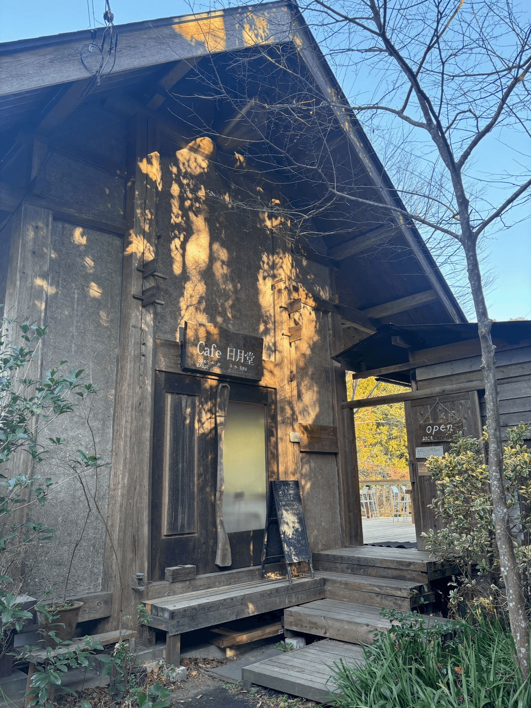
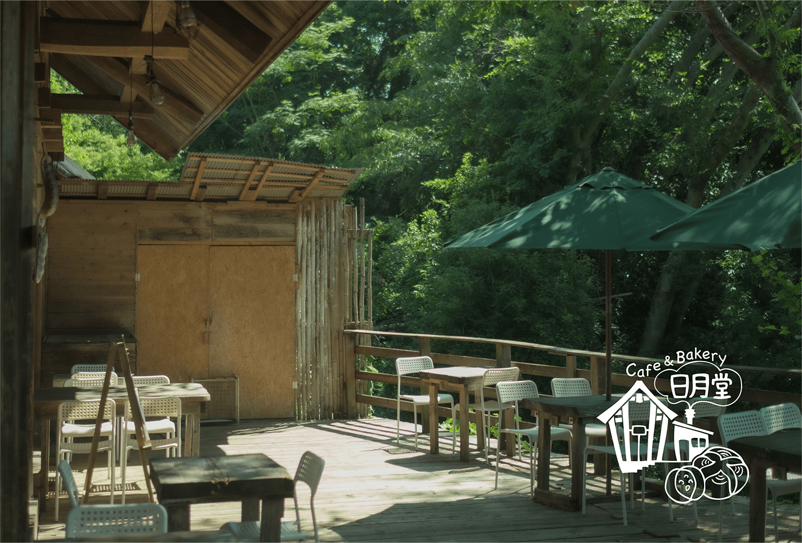

【訪問レポ】カフェ＆ベーカリー日月堂 | 地元に愛される癒しの空間
1.訪問のきっかけ
SNSでも話題となっており、友人のお誘いをきっかけに訪問することになった日月堂。やや距離はありましたが気になったため、平日の昼に行ってみました！
2.お店の基本情報
- 店名：カフェ＆ベーカリー Cafe 日月堂
- 訪問日：2025年3月７日
- 場所：埼玉県日高市高麗本郷 729-1
-
営業時間：
平日：
11:30-16:30(L.O.16:00)
土日祝：
11:30-17:00(L.O.16:30)
- Instagram:Instagram@nichigetsudo_bakery
3.注文したメニュー
- 国産鳥ハーブチキンとモッツアレラチーズのサンドイッチ
- クロックムッシュ
- 日月堂コーヒー
- カフェオレ
- ベイクドチーズケーキ
4.お店の雰囲気
木の温もりに囲まれた店内は、ゆったりとした時間が流れたいてとても落ち着けました。
テラス席、店内席の両方があったので雨の日でも安心です。


5.まとめ
自然体で過ごせる、あたたかい空間でした。
駅からは距離があるので車での来店がおすすめだと思いました。
予約は不要です。